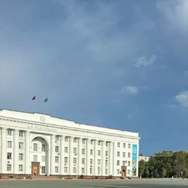

01
Здравоохранение · событие дня
Всего 17 человек получили медицинскую помощь, большинство из них — амбулаторную. В больницах остаются 6 пациентов
Состояние всех оценивается как средней степени тяжести, динамика самочувствия положительная.…